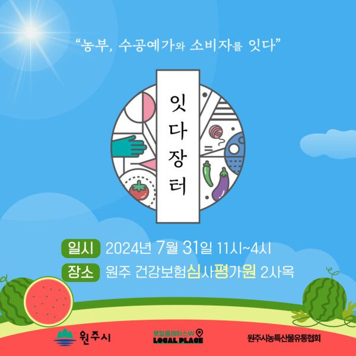

우리 조합원 협동조합 연과미소와 사업이용조직 원주문화관광협동조합 무지개가 함께 준비한 콜라보세트 <미소세트> 사전주문으로 여름을 미리 예약하세요!
연과미소 미숫가루 500g과 원주를 담은 케이크(소) 세트가 정가 14,000원 → 10,000원으로 할인해 사전주문을 받고 있습니다.
사전예약한 미소세트는 7월 31일 심평원 2사옥 잇다장터에서 수령하실 수 있습니다
(사전예약:~7/28까지 / 100세트 한정수량)
+ 잇다장터 홍보 포스터 +
